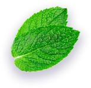
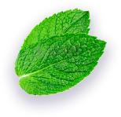

Рада видеть вас на моем сайте. Будем знакомы. Меня зовут Екатерина Маслова.
Я нутрициолог, специалист по детскому питанию и физическому развитию, коуч и консультант в области трансактного анализа. В нутрициологию я пришла, когда стала мамой и столкнулась с аллергией и проблемами в развитии ребенка.
Сейчас я работаю с детьми и взрослыми онлайн и оффлайн, провожу консультации, встречи и семинары по вопросам здоровья, правильного рациона, коррекции хронических заболеваний, аллергии, развития речи и интеллекта, антистресс-менеджмента и anti-age методик.
В инстаграм я веду аккаунт @nutri_mam. В нем делюсь полезными рекомендациями и рецептами. В сторис провожу разборы анализов, рассказываю о том, как усилить иммунитет, укрепить здоровье взрослых и детей, освещаю вопросы питания и отвечаю на вопросы подписчиков.
Я стараюсь получать современные знания. Поэтому обучаюсь и повышаю квалификации у врачей, нутрициологов и специалистов смежных областей из США, Великобритании и России.
Мое первое образование – педагогическое. Я также получила специализацию в области трансактного анализа и коучинга в Профессиональной Психотерапевтической Лиге и Transformation Academy (США).
Базовое обучение нутрициологии я проходила в Alison Academy (США). Прослушала курсы The Institute for Functional Medicine (США), повышала квалификацию в Академии Медицинского Образования.
Вопросы детского питания, детской йоги и физической культуры я изучала в Академии специалистов индустрии здоровья, Уральском учебно-курсовом центре аэробики и фитнеса, Уральском институте фитнеса, Международном университете фитнес-индустрии.
Углубленные знания по аллергологии, диетологии и нутрициологическому коучингу я получила в the University of Basel, Институте функциональной интегративной диетологии, Международном институте интегративной нутрициологии, а также на различных семинарах, классах и интенсивах.


- улучшить познавательные и интеллектуальные способности детей,
- скорректировать СДВГ, ЗПР, ЗРР, РАС,
- повысить иммунитет, понять, в чем причины часто возникающих заболеваний,
- восстановиться после длительного лечения, беременности,
- подготовиться к беременности и рождению малыша,
- получить расшифровку анализов и рекомендации к ним,
- скорректировать рацион с учетом нюансов здоровья,
- избавиться от сахарной или фаст-фуд зависимости,
- получить персональное меню,
- начать самостоятельно составлять меню для себя и своей семьи,
- улучшить внешние данные и физическую форму.
В своих программах я придерживаюсь противовоспалительных протоколов питания, рекомендую ограничение продуктов на основе сахара, белой муки, молочной продукции промышленного производства. Помогаю найти здоровую альтернативу и консультирую по вопросам дополнительного приема микроэлементов к пище. Разрабатываю вспомогательные схемы питания к назначениям врача в случае лечения.
Я веду онлайн-консультации и очные приемы в Екатеринбурге.